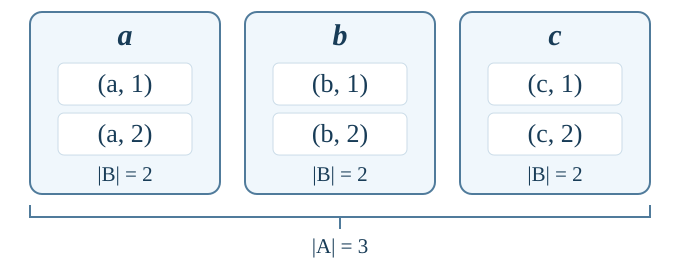
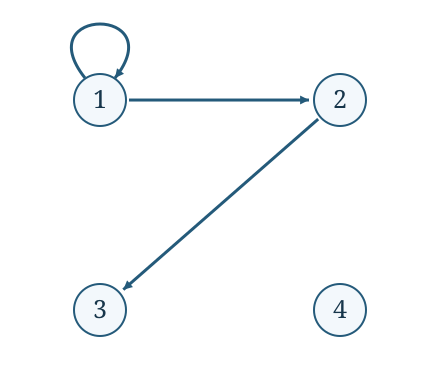
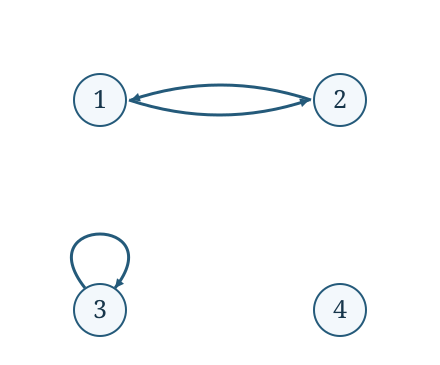

3 יחסים
בפרק הקודם הוספנו לאוצר המילים המתמטי את המושג קבוצה. בפרק זה נרחיב את השפה בעזרת המושג יחס, שיאפשר לנו לתאר קשרים בין איברים של קבוצות.
3.1 זוגות סדורים ומכפלה קרטזית
3.1.1 כאן הסדר דווקא חשוב
כדי לציין מקום באולם, צריך לדעת גם את מספר השורה וגם את מספר הכיסא. הקבוצה \(\{2,5\}\) אינה מבדילה בין ״שורה 2, כיסא 5״ לבין ״שורה 5, כיסא 2״, כי \(\{2,5\}=\{5,2\}\). לכן נשתמש בכתיב שבו המקום הראשון מציין את השורה והמקום השני מציין את הכיסא: \((2,5)\) ו־\((5,2)\) יציינו מקומות שונים באולם. כתיב כזה נקרא זוג סדור.
הגדרה 3.1.1 — זוג סדור.
זוג סדור הוא זוג של איברים שאינם בהכרח שונים, הכתובים בסדר מסוים, כאשר יש חשיבות לסדרם. האיבר במקום הראשון נקרא הרכיב הראשון, והאיבר במקום השני נקרא הרכיב השני. הזוג הסדור שהרכיב הראשון שלו הוא \(a\) והרכיב השני שלו הוא \(b\) מסומן ב־\((a,b)\).
שני זוגות סדורים שווים אם ורק אם הרכיבים במקומות המתאימים שווים:
\[(a,b)=(c,d)\quad\Longleftrightarrow\quad a=c\ \land\ b=d.\]
הערה. ייתכן ש־\(a=b\). למשל, בזוג \((2,2)\) המספר \(2\) מופיע בשני המקומות, ואילו הקבוצה \(\{2,2\}=\{2\}\) מכילה איבר אחד בלבד.
דוגמה 3.1.2 — מחליפים מקומות, ומשווים רכיבים.
- \((2,5)\ne(5,2)\): הרכיבים הראשונים שונים. לעומת זאת, \(\{2,5\}=\{5,2\}\), כי בקבוצה הסדר אינו חשוב.
- \((2,5)\ne(2,7)\): שוויון הרכיב הראשון לבדו אינו מספיק; גם הרכיבים השניים צריכים להיות שווים.
בדיקה עצמית.
בחרו תנאי על \(a,b\) השקול לשוויון \((a,b)=(b,a)\). נמקו לפי הגדרת השוויון של זוגות.
בחרו תשובה ובדקו את הנימוק.
שאלה 3.1.3 — מוצאים את הרכיבים.
מצאו את \(x\) ואת \(y\) אם \((x+1,4)=(3,y-2)\). כתבו את שני הערכים ובדקו את התשובה.
3.1.2 כל הצירופים של שתי בחירות
אם יש שתי אפשרויות לשורה ושלוש אפשרויות לכיסא בכל שורה, אפשר ליצור שישה זוגות של ״שורה, כיסא״. כל מקום מתקבל מבחירה ראשונה ואחריה בחירה שנייה.
הגדרה 3.1.4 — מכפלה קרטזית.
המכפלה הקרטזית \(A\times B\) היא קבוצת כל הזוגות הסדורים \((a,b)\) שבהם \(a\in A\) ו־\(b\in B\).
\[A\times B=\{(a,b)\mid a\in A\quad\heb{וגם}\quad b\in B\}.\]
הסימן \(\times\) מציין כאן פעולה על קבוצות: בחירת רכיב ראשון מ־\(A\) ורכיב שני מ־\(B\). לא כופלים את ערכי הרכיבים.
דוגמה 3.1.5 — ארבעה זוגות, ולא ארבע מכפלות.
עבור \(A=\{1,2\}\) ו־\(B=\{2,4\}\) מתקבל
\[A\times B=\{(1,2),(1,4),(2,2),(2,4)\}.\]
הזוג \((1,4)\) שייך למכפלה כי \(1\in A\) ו־\(4\in B\). לעומת זאת, \((4,1)\) אינו שייך לה: הרכיב הראשון אינו ב־\(A\) וגם הרכיב השני אינו ב־\(B\). המספר \(4\) אינו איבר של \(A\times B\); איברי המכפלה הם זוגות סדורים.
דוגמה 3.1.6 — כל אחד משני התנאים נחוץ.
תהיינה \(A=\{1,2\}\) ו־\(B=\{2,4\}\). בדקו בכל זוג אם שני הרכיבים מקיימים את תנאי השייכות למכפלה.
האם \((1,7)\) שייך ל־\(A\times B\)? האם \((7,2)\) שייך ל־\(A\times B\)? ענו ונמקו.
3.1.3 הסדר, המספר והקבוצה הריקה
דוגמה 3.1.7 — מכפלות בסדר הפוך.
תהיינה \(A=\{1\}\) ו־\(B=\{2,3\}\). אז
\[A\times B=\{(1,2),(1,3)\},\]
\[B\times A=\{(2,1),(3,1)\}.\]
אלו קבוצות שונות, אף שיש בהן אותו מספר איברים. למשל, \((1,2)\) שייך ל־\(A\times B\) ואינו שייך ל־\(B\times A\).
שימו לב — סדר הקבוצות במכפלה קרטזית.
החלפת סדר הקבוצות מחליפה את התפקידים של שני הרכיבים. לכן אין להניח ש־\(A\times B=B\times A\).
משפט 3.1.8 — עצמת מכפלה קרטזית.
תהיינה \(A,B\) קבוצות סופיות. אז
\[|A\times B|=|A|\cdot|B|.\]
הוכחה.
לכל \(a\in A\), הזוגות שהרכיב הראשון שלהם הוא \(a\) הם בדיוק הזוגות \((a,b)\) שבהם \(b\in B\). לכל איבר של \(B\) מתקבל זוג אחד, ולכן יש בדיוק \(|B|\) זוגות שהרכיב הראשון שלהם הוא \(a\).
בקבוצה \(A\) יש \(|A|\) איברים. לכן יש \(|A|\) קבוצות של זוגות, אחת לכל בחירה של הרכיב הראשון, ובכל אחת מהן בדיוק \(|B|\) זוגות. כל זוג ב־\(A\times B\) נספר בדיוק פעם אחת, בקבוצה המתאימה לרכיב הראשון שלו.
מספר הזוגות הכולל הוא סכום של \(|A|\) מחוברים, שכל אחד מהם שווה ל־\(|B|\). סכום זה הוא \(|A|\cdot|B|\), לפי הגדרת הכפל במספרים טבעיים כחיבור חוזר. לכן
\[|A\times B|=|A|\cdot|B|.\]
אם אחת הקבוצות ריקה, אין זוגות במכפלה, ושני אגפי השוויון שווים לאפס.
דוגמה 3.1.9 — ספירת הזוגות במכפלה.
תהיינה \(A=\{a,b,c\}\) ו־\(B=\{1,2\}\). נחלק את הזוגות לתיבות לפי הרכיב הראשון:

כמה זוגות יש בתיבות בסך הכול? יש \(|A|=3\) תיבות, ובכל אחת בדיוק \(|B|=2\) זוגות. לכן
\[|A\times B|=2+2+2=3\cdot2=6.\]
אם מחליפים את \(B\) בקבוצה הריקה, אין זוגות באף תיבה, ומספר הזוגות הוא \(3\cdot0=0\).
חשוב לזכור — מכפלה עם הקבוצה הריקה.
אם אחת הקבוצות ריקה, אי אפשר לבחור ממנה רכיב לזוג. לכן, לכל קבוצה \(A\),
\[A\times\varnothing=\varnothing\times A=\varnothing.\]
דוגמה 3.1.10 — הקבוצה הריקה לעומת קבוצה שמכילה אותה.
תהי \(A=\{1,2\}\). המכפלה \(A\times\varnothing\) ריקה. לעומת זאת,
\[A\times\{\varnothing\}=\{(1,\varnothing),(2,\varnothing)\}.\]
הקבוצה \(\{\varnothing\}\) מכילה איבר אחד, ואפשר להשתמש בו כרכיב שני. לכן במכפלה \(A\times\{\varnothing\}\) יש שני זוגות.
סיכום — שתי בחירות עם תפקידים.
- בזוג סדור המקום חשוב; בקבוצה סדר האיברים אינו חשוב.
- \((a,b)\in A\times B\) כאשר \(a\in A\) וגם \(b\in B\).
- בקבוצות סופיות מכפילים את מספר האפשרויות בשני המקומות.
3.1.4 תרגול לסעיף: מכפלה קרטזית
בדיקה עצמית.
נתון \(A=\{1\}\) ו־\(B=\{2\}\). ענו על שתי השאלות ונמקו.
בחרו תשובה ובדקו את הנימוק.
שאלה 3.1.11.
באולם יש שתי שורות, \(1,2\), ובכל שורה שלושה כיסאות, \(1,2,3\). כתבו את קבוצת המקומות, כאשר הרכיב הראשון הוא מספר השורה.
כתבו את התשובה כקבוצה של זוגות סדורים, בתבנית {(a,b),(c,d)}.
פתרון והסבר
קבוצת המקומות היא \(\{1,2\}\times\{1,2,3\}\), כלומר
\[\{(1,1),(1,2),(1,3),(2,1),(2,2),(2,3)\}.\]
יש \(2\cdot3=6\) מקומות. הזוג \((3,1)\) אינו ברשימה, כי אין שורה \(3\).
שאלה 3.1.12.
תהיינה \(A=\{1,2\}\) ו־\(B=\{2,4\}\). כתבו את \(A\times B\).
הקלידו את כל הזוגות הסדורים בתוך קבוצה, למשל {(a,b),(c,d)}. אפשר לבדוק את התשובה או לבחור להציג אותה.
משחק 3.1.13 — מכפלה קרטזית של מספרים וסוגי קלפים.
נבחר את קבוצת המספרים \(A=\{2,3\}\) ואת קבוצת הסוגים \(B=\{\heb{לב},\heb{עלה}\}\). קלף מיוצג בזוג סדור: המספר הוא הרכיב הראשון והסוג הוא הרכיב השני. למשל, \((2,\heb{לב})\) מייצג קלף שמספרו \(2\) וסוגו לב.
בחרו את כל הקלפים ששייכים ל־\(A\times B\).
שאלה 3.1.14.
השוו זוגות וקבוצות, ספרו זוגות ובדקו מכפלה עם הקבוצה הריקה.
שאלה 3.1.15.
כתבו את שתי המכפלות הקרטזיות לפי הסדר המבוקש.
3.2 יחסים בין קבוצות
3.2.1 מן האפשרויות אל הקשרים שמתקיימים
נניח שבודקים הרשמה לשני חוגים. נסמן את קבוצת הסטודנטים ב־\(A=\{\heb{דנה},\heb{נועם},\heb{רוני}\}\) ואת קבוצת החוגים ב־\(B=\{\heb{שחמט},\heb{צילום}\}\). המכפלה \(A\times B\) מכילה את כל ששת הזוגות האפשריים של סטודנט וחוג. כדי לתאר מי נרשם לאיזה חוג, נשמור רק את הזוגות שבהם הסטודנט אכן נרשם לחוג. כך נקבל תת־קבוצה של \(A\times B\).
הגדרה 3.2.1 — יחס בין קבוצות.
תהיינה \(A,B\) קבוצות. יחס מ־\(A\) ל־\(B\) הוא קבוצה \(R\) של זוגות סדורים המקיימת
\[R\subseteq A\times B.\]
כלומר, לכל \((a,b)\in R\) מתקיים \(a\in A\) וגם \(b\in B\). כותבים גם \(aRb\) במקום \((a,b)\in R\), וקוראים: ״\(a\) עומד ביחס \(R\) ל־\(b\)״.
דוגמה 3.2.2 — מי נרשם לאיזה חוג?
נניח שדנה נרשמה לשחמט ולצילום, נועם נרשם לצילום בלבד, ורוני לא נרשם לאף אחד משני החוגים. יחס ההרשמה הוא
\[R=\{(\heb{דנה},\heb{שחמט}),(\heb{דנה},\heb{צילום}),(\heb{נועם},\heb{צילום})\}.\]
למשל, \((\heb{דנה},\heb{שחמט})\in R\), ואפשר לכתוב גם \(\heb{דנה}\,R\,\heb{שחמט}\). לעומת זאת, \((\heb{נועם},\heb{שחמט})\notin R\), אף שהזוג שייך ל־\(A\times B\).
דנה מופיעה כרכיב ראשון בשני זוגות ורוני אינו מופיע בשום זוג. שני המצבים מותרים: הגדרת יחס אינה דורשת שכל איבר של \(A\) יופיע, ואינה מגבילה את מספר הזוגות שבהם הוא מופיע.
דוגמה 3.2.3 — יחס המתואר באמצעות תנאי.
תהיינה \(A=\{1,2,3\}\) ו־\(B=\{2,4\}\). נגדיר
\[R=\{(a,b)\in A\times B\mid a<b\}.\]
עבור \(a=1\) שני איברי \(B\) גדולים ממנו; עבור \(a=2\) ועבור \(a=3\) רק \(4\) גדול מ־\(a\). לכן
\[R=\{(1,2),(1,4),(2,4),(3,4)\}.\]
למשל, \(2R4\) הוא פסוק אמת, ואילו \(2R2\) הוא פסוק שקר. גם \((1,3)\) אינו שייך ל־\(R\): האי־שוויון \(1<3\) מתקיים, אך \(3\notin B\). התנאי \(a<b\) בוחר זוגות מתוך \(A\times B\) בלבד.
דוגמה 3.2.4 — בלי קשרים, או עם כל הקשרים.
עבור \(A=\{1,2\}\) ו־\(B=\{3\}\), גם \(\varnothing\) וגם \(A\times B=\{(1,3),(2,3)\}\) הם יחסים מ־\(A\) ל־\(B\). הראשון אינו מכיל אף זוג, והשני מכיל את כל הזוגות האפשריים. ההגדרה דורשת הכלה, ולכן אינה מוציאה אף אחד משני המקרים האלה.
אם \(B=\varnothing\), המכפלה \(A\times B\) ריקה. במקרה זה היחס היחיד מ־\(A\) ל־\(B\) הוא \(\varnothing\), כי לקבוצה הריקה יש רק תת־קבוצה אחת.
דוגמה 3.2.5 — זוג אחד מחוץ למכפלה מספיק.
עבור \(A=\{1,2\}\) ו־\(B=\{3\}\), הקבוצה \(S=\{(1,3),(2,5)\}\) אינה יחס מ־\(A\) ל־\(B\), כי \(5\notin B\) ולכן \((2,5)\notin A\times B\). אם מחליפים את \(B\) בקבוצה \(C=\{3,5\}\), אז \(S\) היא יחס מ־\(A\) ל־\(C\). לכן בבדיקה אם קבוצה של זוגות היא יחס בין קבוצות נתונות, צריך לבדוק גם את הקבוצות שצוינו.
3.2.2 בדיקה עצמית: מה ההגדרה דורשת?
בדיקה עצמית.
תהיינה \(A=\{1,2\}\) ו־\(B=\{3,4\}\). קבעו בכל סעיף אם הקבוצה הנתונה היא יחס מ־\(A\) ל־\(B\).
בחרו תשובה ובדקו את הנימוק.
בדיקה עצמית.
נתון \(R\subseteq A\times B\), וכן \(a\in A\) ו־\(b\in B\).
האם בהכרח \(aRb\)?
אם לא, בנו דוגמה נגדית שבה \(R\) אינו ריק: כתבו קבוצות \(A,B\), יחס \(R\), וזוג ששייך ל־\(A\times B\) אך אינו שייך ל־\(R\).
הזינו את שלוש הקבוצות ואת הזוג ובדקו שהם מקיימים את הדרישות.
3.2.3 שאלות פתורות
שאלה 3.2.6.
תהיינה \(A=\{1,2,3\}\) ו־\(B=\{2,3,4\}\). נגדיר יחס \(R\) מ־\(A\) ל־\(B\) כך ש־\(aRb\) אם ורק אם \(a+1=b\). כתבו את \(R\) ברשימת זוגות. האם \((3,4)\) ו־\((2,1)\) שייכים ל־\(R\)?
לכל \(a\in A\), חשבו את \(a+1\) ובדקו אם התוצאה שייכת ל־\(B\).
עבור \(a=1\) נקבל \(b=2\); עבור \(a=2\) נקבל \(b=3\); ועבור \(a=3\) נקבל \(b=4\). שלוש התוצאות שייכות ל־\(B\), ולכן
\[R=\{(1,2),(2,3),(3,4)\}.\]
הזוג \((3,4)\) שייך ל־\(R\). הזוג \((2,1)\) אינו שייך ל־\(R\): הוא אינו במכפלה, כי \(1\notin B\), וגם אינו מקיים \(2+1=1\). עצם הופעת \((1,2)\) ברשימה אינה מחייבת את הופעת \((2,1)\).
שאלה 3.2.7 — מוכיחים שקבוצת זוגות היא יחס.
יהיו \(R,S\) יחסים מ־\(A\) ל־\(B\). הוכיחו שגם \(R\cup S\) הוא יחס מ־\(A\) ל־\(B\). לאחר מכן בדקו מה עלול להשתבש אם \(S\) הוא יחס מ־\(B\) ל־\(A\) במקום מ־\(A\) ל־\(B\).
כדי להוכיח שהאיחוד הוא יחס, יש להוכיח \(R\cup S\subseteq A\times B\). התחילו מאיבר כלשהו של האיחוד.
יהי \(z\in R\cup S\). לפי הגדרת האיחוד, \(z\in R\) או \(z\in S\). במקרה הראשון, \(z\in A\times B\) כי \(R\subseteq A\times B\). במקרה השני מתקבלת אותה מסקנה כי \(S\subseteq A\times B\). לכן \(R\cup S\subseteq A\times B\), וזה בדיוק התנאי לכך שהאיחוד יהיה יחס מ־\(A\) ל־\(B\).
למשל, עבור \(A=\{1,2\}\) ו־\(B=\{3\}\), היחסים \(R=\{(1,3)\}\) ו־\(S=\{(2,3)\}\) נותנים את האיחוד \(\{(1,3),(2,3)\}\), שהוא יחס מ־\(A\) ל־\(B\).
אם במקום זאת נבחר \(S=\{(3,1)\}\), נקבל יחס מ־\(B\) ל־\(A\). כעת \(R\cup S\) אינו יחס מ־\(A\) ל־\(B\), כי \((3,1)\notin A\times B\). ההנחה על הקבוצות שמהן נבחרים הרכיבים היא שאפשרה את שני המקרים בהוכחה.
3.2.4 תרגול: יחסי הרשמה
שאלה 3.2.8.
קבוצת הסטודנטים היא \(A=\{\heb{דנה},\heb{נועם},\heb{רוני}\}\) וקבוצת החוגים היא \(B=\{\heb{שחמט},\heb{צילום}\}\). ידועים הפרטים הבאים:
- דנה נרשמה לשני החוגים.
- רוני לא נרשם לאף חוג.
- ליחס ההרשמה \(R\) יש בדיוק שלושה זוגות.
כתבו את כל יחסי ההרשמה שמתאימים לרמזים. לאחר מכן הוסיפו פרט אחד על נועם שיקבע יחס יחיד, והסבירו איזה זוג הוא קובע.
רמז
הרמז הראשון קובע שני זוגות. הרמז השני מוציא שני זוגות אפשריים. ממי יכול להגיע הזוג השלישי?
פתרון והסבר
שני הזוגות של דנה חייבים להופיע. אף זוג של רוני אינו יכול להופיע. לכן הזוג השלישי חייב לכלול את נועם, ויש בדיוק שתי אפשרויות:
\[R_1=\{(\heb{דנה},\heb{שחמט}),(\heb{דנה},\heb{צילום}),(\heb{נועם},\heb{שחמט})\},\]
\[R_2=\{(\heb{דנה},\heb{שחמט}),(\heb{דנה},\heb{צילום}),(\heb{נועם},\heb{צילום})\}.\]
למשל, הפרט ״נועם נרשם לצילום״ קובע את הזוג \((\heb{נועם},\heb{צילום})\) ומשאיר רק את \(R_2\). מהנתון שיש בדיוק שלושה זוגות נובע שנועם לא נרשם גם לשחמט. הפעילות מראה שמידע על יחס עשוי להשאיר כמה קבוצות זוגות אפשריות; כדי לקבוע את היחס צריך להכריע אילו זוגות נכללים בו.
3.3 יחסים על קבוצה
3.3.1 שני הרכיבים נבחרים מאותה קבוצה
ביחס ההרשמה לחוגים, הרכיב הראשון של כל זוג היה סטודנט והרכיב השני היה חוג. לעומת זאת, כשמשווים שני מספרים מתוך \(A=\{1,2,3\}\) ושואלים אם הראשון קטן מהשני, שני הרכיבים נבחרים מתוך \(A\). גם כאן מתארים את הקשר באמצעות זוגות סדורים; הפעם הזוגות נבחרים מתוך \(.A\times A\)
הגדרה 3.3.1 — יחס על קבוצה.
תהי \(A\) קבוצה. יחס על \(A\) הוא קבוצה \(R\) של זוגות סדורים ששני רכיביהם שייכים ל־\(A\). כלומר,
\[R\subseteq A\times A.\]
זהו יחס מ־\(A\) ל־\(.A\) כמו ביחס בין שתי קבוצות, הכתיב \(aRb\) פירושו \(.(a,b)\in R\)
דוגמה 3.3.2 — יחס הנתון ברשימת זוגות.
תהי \(,A=\{1,2,3,4\}\) ונגדיר
\[R=\{(1,1),(1,2),(2,3)\}.\]
שני הרכיבים של כל זוג ברשימה שייכים ל־\(,A\) ולכן \(R\) הוא יחס על \(.A\) מתקיים \(,1R1\) וגם \(1R2\) ו־\(.2R3\) לעומת זאת, \(2R1\) אינו מתקיים, כי \(.(2,1)\notin R\)
בזוג \((1,1)\) שני הרכיבים שווים, ובזוג \((1,2)\) הם שונים; שני המצבים מותרים. גם העובדה שהאיבר \(4\) אינו מופיע בשום זוג אינה מפריעה לכך ש־\(R\) יהיה יחס על \(.A\)
דוגמה 3.3.3 — היחס ״קטן מ־״ על קבוצה סופית.
על הקבוצה \(A=\{1,2,3\}\) נגדיר
\[L=\{(a,b)\in A\times A\mid a<b\}.\]
הזוגות שמקיימים את התנאי הם בדיוק
\[L=\{(1,2),(1,3),(2,3)\}.\]
לכן \(1L3\) מתקיים ואילו \(3L1\) אינו מתקיים. אף זוג מהצורה \((a,a)\) אינו שייך ל־\(,L\) כי אין מספר שקטן מעצמו. ההגדרה של יחס על קבוצה מתירה זוגות כאלה, אך אינה מחייבת לכלול אותם.
דוגמה 3.3.4 — אותה קבוצת זוגות על קבוצות שונות.
הקבוצה \(R=\{(1,2)\}\) היא יחס על \(,A=\{1,2\}\) וגם יחס על \(B=\{1,2,3\}\): בשני המקרים שני רכיבי הזוג שייכים לקבוצה שצוינה.
לעומת זאת, \(R\) אינו יחס על \(,C=\{1\}\) כי \(.2\notin C\) לא מספיק שרק הרכיב הראשון שייך ל־\(C\); גם הרכיב השני חייב להשתייך אליה.
3.3.2 מציגים יחס באמצעות חצים
כאשר \(A\) סופית, אפשר לצייר את איבריה ולסמן בחצים אילו זוגות נמצאים ביחס. כיוון ששני הרכיבים נבחרים מאותה קבוצה, די לצייר כל איבר של \(A\) פעם אחת.
שיטה 3.3.5 — תרשים של יחס על קבוצה סופית.
כדי לצייר יחס \(R\) על קבוצה סופית \(A\):
- מציירים נקודה לכל איבר של \(,A\) גם אם האיבר אינו מופיע בשום זוג של \(.R\) הנקודות נקראות קודקודים.
- לכל זוג \(,(a,b)\in R\) מציירים חץ מ־\(a\) אל \(b\). תחילת החץ מציינת את הרכיב הראשון, וקצה החץ מציין את הרכיב השני. לא מציירים חץ עבור זוג שאינו ביחס.
- זוג \((a,a)\in R\) מיוצג בחץ שמתחיל ב־\(a\) וחוזר אליו. חץ כזה נקרא לולאה.
תרשים המורכב מקודקודים ומחצים מכוונים נקרא גרף מכוון.
דוגמה 3.3.6 — לולאה ואיבר שאינו מופיע בזוגות.
נחזור ל־\(A=\{1,2,3,4\}\) וליחס \(R=\{(1,1),(1,2),(2,3)\}\):

הלולאה ב־\(1\) מייצגת את \(.(1,1)\) שני החצים האחרים מייצגים את \((1,2)\) ואת \(.(2,3)\) הקודקוד \(4\) מופיע בתרשים מפני ש־\(,4\in A\) אף שאין חץ שמתחיל בו או מסתיים בו. קודקוד כזה נקרא קודקוד מבודד.
אפשר לעבור מ־\(1\) אל \(3\) דרך \(,2\) אבל אין חץ ישיר מ־\(1\) אל \(.3\) לכן \((1,3)\notin R\): כל חץ מייצג זוג אחד, ולא מסיקים זוג נוסף מעצם האפשרות לעבור בכמה חצים.
3.3.3 בדיקה עצמית
בדיקה עצמית.
תהי \(A=\{1,2\}\) ויהי \(R=\{(1,2)\}\) יחס על \(.A\) ענו לפי הגדרת היחס.
בחרו תשובה בכל סעיף ובדקו את הנימוק.
בדיקה עצמית.
התרשים הבא מציג יחס \(S\) על \(.A=\{1,2,3,4\}\) שימו לב לכיוון של כל חץ.

כתבו את \(S\) ברשימת זוגות סדורים.
3.3.4 שאלות פתורות
שאלה 3.3.7.
תהי \(.A=\{0,1,2,3,4\}\) נגדיר יחס \(T\) על \(A\) באמצעות התנאי
\[aTb\quad\Longleftrightarrow\quad a+b=4.\]
כתבו את \(T\) ברשימת זוגות סדורים.
פתרון והסבר
לכל \(,a\in A\) התנאי \(a+b=4\) קובע \(.b=4-a\) עבור \(a=0,1,2,3,4\) נקבל בהתאמה \(.b=4,3,2,1,0\) כל חמש התוצאות שייכות ל־\(,A\) ולכן
\[T=\{(0,4),(1,3),(2,2),(3,1),(4,0)\}.\]
הזוגות \((1,3)\) ו־\((3,1)\) הם שני זוגות שונים, ושניהם מקיימים את התנאי. הזוג \((2,2)\) מופיע פעם אחת; בתרשים הוא ייוצג בלולאה ב־\(.2\)
שאלה 3.3.8.
נתונה קבוצת הזוגות
\[R=\{(1,2),(3,1),(3,3)\}.\]
מצאו את הקבוצה הקטנה ביותר \(A\) לפי הכלה, שעבורה \(R\) הוא יחס על \(.A\)
פתרון והסבר
כדי ש־\(,R\subseteq A\times A\) הקבוצה \(A\) חייבת להכיל את שני הרכיבים של כל זוג ב־\(.R\) מן הזוג \((1,2)\) נובע ש־\(,1,2\in A\) ומן הזוג \((3,1)\) נובע שגם \(.3\in A\) לכן כל קבוצה מתאימה מכילה את \(.\{1,2,3\}\)
מצד שני, אם נבחר \(,A=\{1,2,3\}\) שני רכיביו של כל זוג נתון שייכים ל־\(,A\) ולכן \(R\) אכן יחס על \(.A\) מכאן ש־\(\{1,2,3\}\) היא הקבוצה הקטנה ביותר המבוקשת.
גם \(B=\{1,2,3,4\}\) מתאימה, אך אינה הקטנה ביותר. בתרשים של \(R\) על \(,B\) האיבר \(4\) יופיע כקודקוד מבודד.
3.3.5 פעילות: בונים תרשים של יחס
משחק 3.3.9 — בניית יחס באמצעות חצים.
בכל שלב נתון יחס על \(.A=\{1,2,3,4\}\) בנו את התרשים שלו: בחרו תחילה את הקודקוד שממנו החץ יוצא, ואחר כך את הקודקוד שאליו הוא נכנס. ליצירת לולאה בחרו באותו קודקוד פעמיים. בחירה חוזרת באותם שני קודקודים, באותו סדר, מסירה את החץ.
התחילו ביחס \(.R=\{(1,2),(2,3)\}\) ציירו את שני החצים והשאירו את \(4\) כקודקוד מבודד.